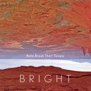

| Artist: | Bright |
| Title: | Bells Break Their Towers |
| Label: | Strange Attractors Audio House SAAH038 |
| Length(s): | 65 minutes |
| Year(s) of release: | 2005 |
| Month of review: | [02/2006] |
| 1) | Manifest Harmony | 5.29 |
| 2) | An Ear Out | 11.53 |
| 3) | Flood | 6.46 |
| 4) | Receiver | 4.29 |
| 5) | It's What I Need | 9.28 |
| 6) | Secret Form Of Time | 5.34 |
| 7) | Bells Break Their Towers | 12.16 |
| 8) | Night | 9.14 |
Manifest Harmony combines loopy guitars with multiple vocal sounds, creating something of a canon. An Ear Out is an instrumental track (as is Secret Form Of Time and Night) featuring some wobbly guitars in the back with slowly building guitar in multiple layers across. This creates an atmosphere that is akin to postrock, but the build up is considerably less extreme than those normally heard in postrock, in fact: it doesn't reach something that would qualify as a climax. The repetitive nature -heard in both vocal and instrumental- tracks also has a certain minimal quality.
Receiver -although still repetitive- has more explicit melodic developments than its predecessors. Due to this it moves, stylistically, in the direction of Cocteau Twins. This is helped by the somewhat esotheric feel of the opening part of the track.
The guitar melody, or riff, or loop, whatever way you'd want to refer to it, is the main instigator of the tracks. Drums and bass are intended mainly for support. The good bits of variation are caused by the sometimes use of acoustic instead of electric guitar, still not creating something that's just quite a load of change. Oh, and yes, there's actually vocals on half the tracks. Or, well, yes, they are vocals, but err, uhm. They do fit the music quite well. Even though not vocalizations, their "plain" English is sung in a way that is near ullulating, or at least fitting the minimalist guitar style so well that the vocals do not really interrupt the minimalist drone, while still doing just that. Secret Form Of Time takes a leave from the usual, being based on piano loops, skipping the guitar drones. Interesting intermission.